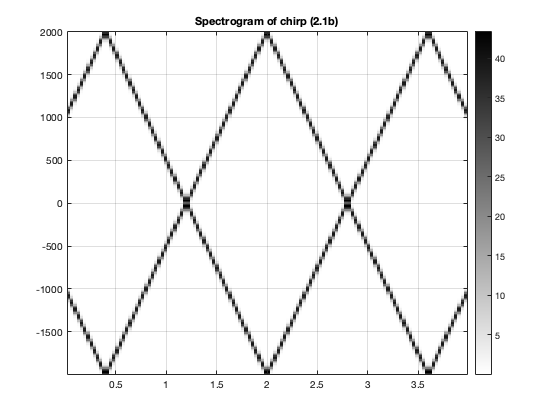
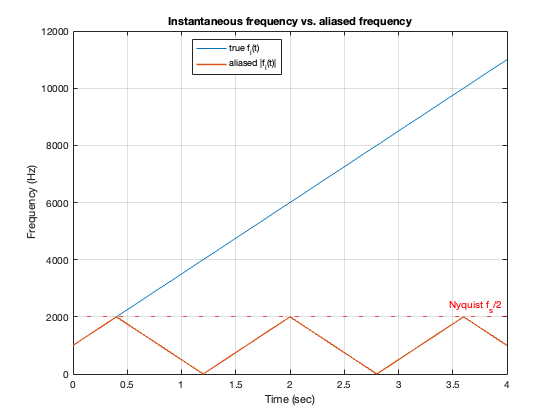
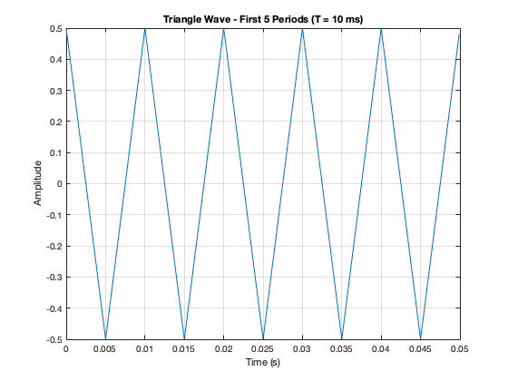
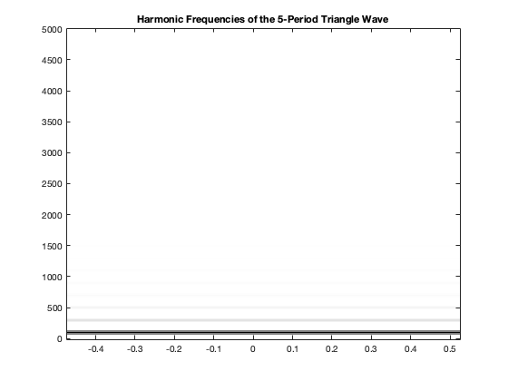

Contents
- Sampling and Aliasing: Lab S-8: Spectrograms: Harmonic Lines & Chirp Aliasing. 2 Lab Exercises (2.1 & 2.2.1) (authors: Joshua Palter, Ryan Zarekarizi)
- 2.1(a) – parameter calculation
- 2.1(b) – generate chirp and spectrogram
- 2.1(c) – instantaneous frequency and aliasing
- 2.2.1 PART (a): Parameters
- 2.2.1 PART (b): plot first 5 periods
- 2.2.1 PART (c): Spectrogram
- 2.2.1 PART (d): Harmonic Frequency List
- 2.2.1 PART (e): Fundamental Frequency of the Harmonics
- 2.1.1 PART (d): Ratio of A1 vs. A3
Sampling and Aliasing: Lab S-8: Spectrograms: Harmonic Lines & Chirp Aliasing. 2 Lab Exercises (2.1 & 2.2.1) (authors: Joshua Palter, Ryan Zarekarizi)
addpath(genpath('../spfirst'))
spfirst;
2.1(a) – parameter calculation
% 2.1a asks us to determine the parameters given in equation (1) % This equation is ψ(t) = 2πμt^2 + 2πf_0t + φ f1 = 1000; % start frequency at t1 (Hz) f2 = 11000; % end frequency at t2 (Hz) t1 = 0; % start time (s) t2 = 4;% end time (s) f0 = f1; % instantaneous freq at t=0 mu = (f2 - f1) / (2*(t2 - t1)); % from 2*mu = (f2-f1)/(t2-t1) fprintf('f0 = %.1f Hz\n', f0); % Display the instantaneous freq at t=0 fprintf('mu = %.1f Hz/s\n', mu); % Display mu
f0 = 1000.0 Hz mu = 1250.0 Hz/s
2.1(b) – generate chirp and spectrogram
% Some setup A = 1; % amplitude phi = 0; % initial phase (rad) % 2.1b asks us to generate a chirp signal, and make a spectrogram % with length L_sect. We are also to determine its duration (T_sect) fs = 4000; % sampling frequency (Hz) dt = 1/fs; tStart = 0; tStop = 4; tt = tStart:dt:tStop; % time % angle and signal psi = 2*pi*mu*tt.^2 + 2*pi*f0*tt + phi; xx = A * real(exp(1j*psi)); % real cosine chirp % Section Length Lsect = 256; % section duration in seconds Tsect = Lsect / fs; fprintf('T_SECT = %.4f seconds\n', Tsect); % plot spectrogram plotspec(xx + 1j*1e-12, fs, Lsect); colorbar; grid on; title('Spectrogram of chirp (2.1b)');
T_SECT = 0.0640 seconds
2.1(c) – instantaneous frequency and aliasing
% 2.1c asks us to explain why the instantaneous frequency in the % spectrogram goes up and down between 0 and fs/2 % There's two reasons this is happening % % Reason 1: 11,000 Hz is WAY above the Nyquist frequency % which is only 2,000 Hz % With this alone we would see values from -fs/2 to fs/2 % (Numerically: [-2000, 2000] Hz) % % Reason 2: Because the spectrogram only "sees" the magnitude % of the values (how much energy there is at each point in time) % This makes everything look positive - reducing the values % We would see down to the range of 0 to fs/2 now due to this % (Numerically: [0, 2000] Hz) % true (continuous-time) instantaneous frequency fi_true = 2*mu*tt + f0; % 2500*t + 1000 % alias into [-fs/2, fs/2] band fi_alias = fi_true - fs*round(fi_true/fs); % wrap modulo fs % This is because we are aliasing % The spectrogram "sees" alias values as opposed to true values fi_seen = abs(fi_alias); figure; plot(tt, fi_true); hold on; plot(tt, fi_seen, 'LineWidth', 1.5); yline(fs/2, 'r:', 'Nyquist f_s/2'); xlabel('Time (sec)'); ylabel('Frequency (Hz)'); legend('true f_i(t)', 'aliased |f_i(t)|', 'Location', 'best'); title('Instantaneous frequency vs. aliased frequency'); grid on; % Verifying with sound
2.2.1 PART (a): Parameters
This section simply defines the parameters and function we will be using for the spectogram.
fs = 10000; % sampling rate T = 10e-3; % 10 ms period tStop = 3; % total signal duration Amp = 2 / T; % gives triangle peak of 0.5 % Triangle Wave tt=0:(1/fs):tStop;qq=rem(tt,T);xx=Amp*(abs(qq-(0.5*T))-0.25*T);
2.2.1 PART (b): plot first 5 periods
With our parameters from the previous part, we will now graph the triangular waveform function with 3 to 5 full periods, I chose 5 periods.
fivePeriods = 5*T*fs; % Create 5 periods of time figure; plot(tt(1:fivePeriods), xx(1:fivePeriods)); xlabel("Time (s)"); ylabel("Amplitude"); title("Triangle Wave - First 5 Periods (T = 10 ms)"); grid on;
2.2.1 PART (c): Spectrogram
In this section, we calculate TSECT and LSECT. TSECT is set to the five periods of the Triangle wave. LSECT is the TSECT multiplied by the Sampling rate. Using these values and the plotspec() function I plot the spectogram.
TSECT = 5*T; % 0.05 seconds LSECT = TSECT*fs; % 500 samples fprintf("TSECT = %.4f s, LSECT = %d samples\n", TSECT, LSECT); % Extract first 5 periods xsect = xx(1:LSECT); % Plot Spectogram figure; plotspec(xsect, fs, LSECT); % magnitude spectrum title('Harmonic Frequencies of the 5-Period Triangle Wave'); % enable for current figure dcm = datacursormode(gcf); dcm.Enable = "on";
TSECT = 0.0500 s, LSECT = 500 samples Warning: PLOTSPEC: Signal length must be greater than 1000 to get a reasonable spectrogram
2.2.1 PART (d): Harmonic Frequency List
Looking at the graph, harmonic frequencies can be seen every 100Hz, but only on the odd harmonics. Harmonic frequencies seen: 100Hz, 300Hz, 500Hz, 700Hz, 900Hz, 1100Hz, 1300Hz, and 1500Hz. The strength of these harmonics lessens as the frequency increases, it goes from a solid black bar at 100Hz, to a barely visible band of grey at 1500Hz.
2.2.1 PART (e): Fundamental Frequency of the Harmonics
We calculate the fundamental frequency of the harmonics.
f0 = 1/T;
fprintf("Fundamental Frequency f0 = %.1f Hz\n", f0);
Fundamental Frequency f0 = 100.0 Hz
2.1.1 PART (d): Ratio of A1 vs. A3
Using Matlab's data cursor, mark the 1st and 3rd harmonics in the graph and get their respective light index values. I Record the Light Index values of the first and third harmonics. Take those values and find the ratio of the values A1/A3.
A1 = 50.7774 A3 = 5.655 fprintf("Light Index value of A1 = %.4f \n", A1); fprintf("Light Index Value of A3 = %.3f \n", A3); Ratio = round(A1/A3); fprintf("Ratio of A1/A3 = %d \n", Ratio);
A1 =
50.7774
A3 =
5.6550
Light Index value of A1 = 50.7774
Light Index Value of A3 = 5.655
Ratio of A1/A3 = 9